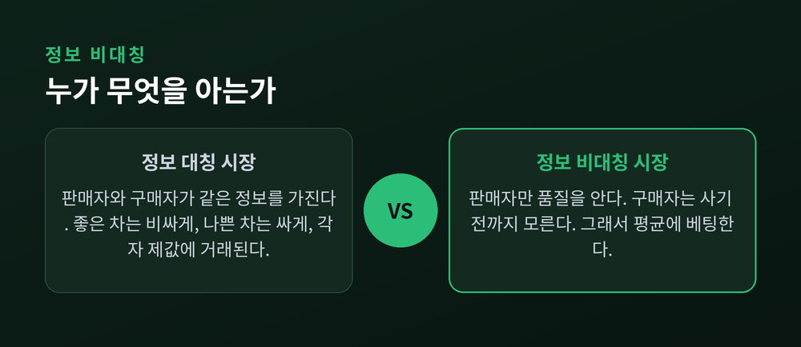
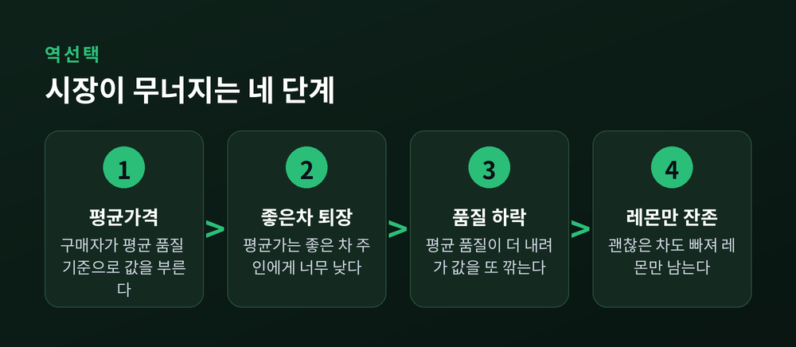
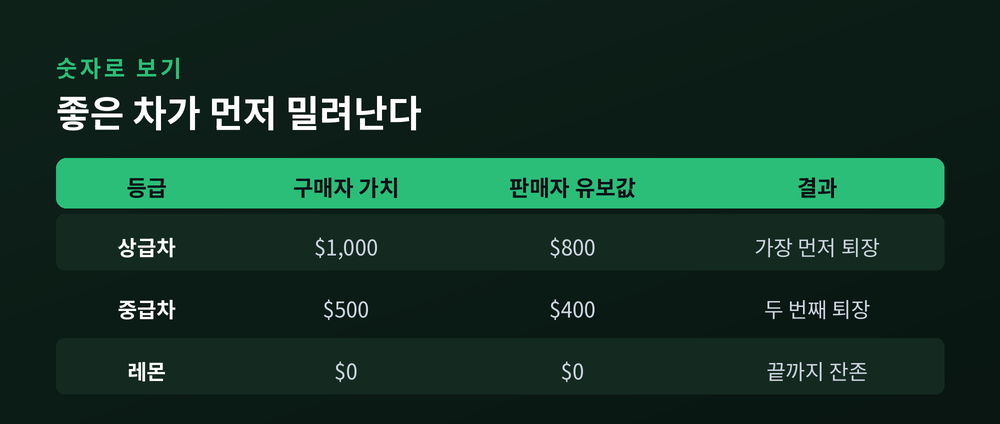
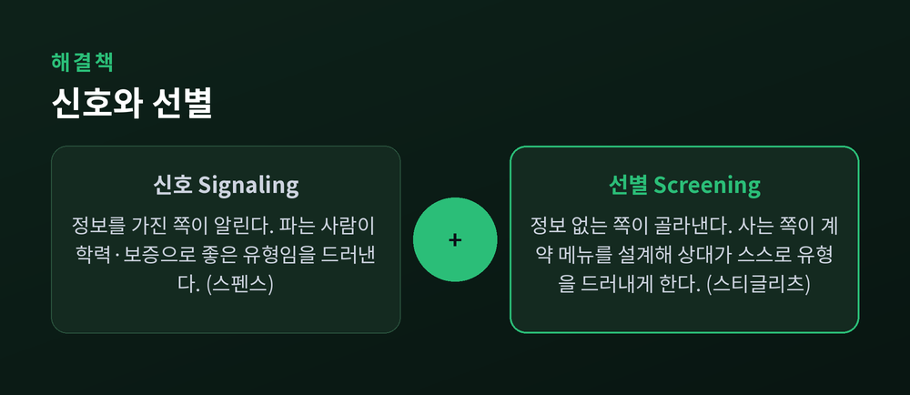
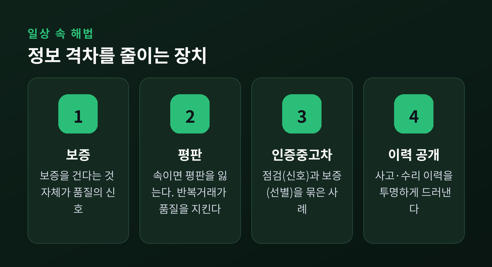

이번 글에서는 정보 비대칭과 레몬 시장을 정리해 보겠습니다. 왜 멀쩡해 보이는 중고차 시장에서 좋은 차가 자취를 감추는지, 그 원리를 경제학의 눈으로 따라가 봅니다. 결론부터 말씀드리면, 원인은 사기꾼이 아니라 "한쪽만 아는 정보"입니다.
미국에서 "레몬(lemon)"은 겉은 멀쩡해 보여도 사고 나면 계속 고장 나는 불량 중고차를 가리키는 말입니다. 반대로 상태 좋은 차는 "복숭아(peach)"라고 부릅니다.
이 표현을 경제학 용어로 끌어올린 사람이 조지 애컬로프입니다. 그는 1970년 논문 "The Market for 'Lemons'"에서, 산 지 얼마 안 된 중고차가 자꾸 고장 나는 흔한 경험을 하나의 시장 실패 모형으로 설명했습니다. 이 짧은 논문 한 편이 훗날 정보 경제학이라는 분야의 문을 열었습니다.
재미있는 사실 하나. 이 논문은 처음에 세 곳의 학술지에서 거절당했습니다. 두 곳은 "내용이 사소하다"고 했고, 한 곳은 "이게 맞는다면 경제학이 통째로 달라져야 한다"며 돌려보냈습니다. 네 번째 투고지에서 겨우 실렸고, 31년 뒤 노벨상으로 이어졌습니다.
문제의 뿌리는 단순합니다. 파는 사람은 차의 진짜 상태를 압니다. 사는 사람은 사기 전까지 모릅니다. 거래하는 두 사람이 가진 정보의 양이 다른 것, 이것을 정보 비대칭이라 합니다.
정보가 양쪽에 똑같이 있다면 시장은 문제없이 돌아갑니다. 좋은 차는 비싸게, 나쁜 차는 싸게, 각자 제값에 팔리면 그만입니다.
어긋남은 정보가 한쪽에만 쏠릴 때 시작됩니다. 구매자는 눈앞의 차가 복숭아인지 레몬인지 가려낼 방법이 없습니다. 그래서 어떤 선택을 할까요. 그는 "평균"에 베팅합니다.

여기서 역선택(adverse selection)이 등장합니다. 이름이 낯설지만 원리는 네 단계로 정리됩니다.
첫째, 구매자는 품질을 모르니 시장의 평균 품질을 기준으로 값을 부릅니다.
둘째, 이 평균 가격은 좋은 차 주인에게 너무 낮습니다. 그래서 좋은 차 주인이 시장을 떠납니다.
셋째, 좋은 차가 빠지면 남은 차들의 평균 품질이 더 내려가고, 구매자는 값을 더 깎습니다.
넷째, 그러면 그다음으로 괜찮은 차 주인도 팔기를 접습니다.
이 과정이 반복되면 시장에는 결국 레몬만 남습니다. 심하면 거래 자체가 사라집니다. 좋은 물건이 스스로 빠져나가 남는 쪽의 구성이 나빠지는 것, 그래서 "역(逆)선택"입니다.
핵심을 한 줄로 압축하면 이렇습니다 — "나쁜 것이 좋은 것을 몰아낸다."

추상적으로 들린다면 숫자를 얹어 보겠습니다. 경제학 강의에서 자주 쓰는 예시입니다.
구매자가 매기는 가치는 상급차 1,000달러, 중급차 500달러, 레몬 0달러라고 합시다. 판매자가 "이 밑으로는 안 판다"고 보는 값은 상급차 800달러, 중급차 400달러, 레몬 0달러입니다.
세 등급이 골고루 있다면 구매자의 기대가치는 (1000＋500＋0)÷3, 즉 500달러입니다. 구매자는 500달러 넘게 내지 않으려 합니다. 그런데 500달러는 상급차 주인의 최소 희망가 800달러보다 낮습니다. 상급차가 빠집니다.
이제 남은 건 중급차와 레몬. 기대가치는 (500＋0)÷2로 250달러가 됩니다. 이번엔 중급차 주인의 400달러보다 낮습니다. 중급차도 빠집니다. 마지막에 남는 건 레몬뿐입니다.
좋은 차가 한 등급씩 차례로 쫓겨나는 이 과정을, 경제학자들은 시장의 조용한 붕괴라고 부릅니다.

그렇다면 현실의 중고차 시장은 왜 완전히 무너지지 않았을까요. 정보의 격차를 메우는 장치들이 생겨났기 때문입니다. 크게 두 방향입니다.
하나는 신호(signaling)입니다. 정보를 가진 쪽, 즉 파는 사람이 "나는 좋은 유형"임을 믿을 만하게 드러내는 겁니다. 마이클 스펜스는 노동시장에서 학력이 바로 그런 신호라고 봤습니다. 학위가 생산성을 직접 높이지 않더라도, 능력 있는 사람일수록 학위를 따기가 덜 힘들기에 학력이 능력의 신호로 작동한다는 것입니다.
다른 하나는 선별(screening)입니다. 정보가 없는 쪽, 즉 사는 사람이 상대가 스스로 정체를 드러내도록 판을 짜는 겁니다. 조지프 스티글리츠는 여러 계약을 메뉴처럼 늘어놓는 방법을 제시했습니다. 보험사가 "자기부담금 높고 보험료 싼 상품"과 그 반대 상품을 함께 내놓으면, 위험이 낮은 사람과 높은 사람이 알아서 다른 상품을 고르게 됩니다.

이론은 우리 주변에 이미 자리 잡고 있습니다.
보증서가 대표적입니다. 품질에 자신 없는 판매자는 보증을 걸기 어렵습니다. 그러니 보증을 건다는 사실 자체가 좋은 차라는 신호가 됩니다.
평판도 힘이 셉니다. 딜러가 불량차를 좋은 차로 속여 팔면 평판을 잃습니다. 반복해서 장사해야 하는 딜러일수록 품질을 지킬 이유가 커집니다.
인증중고차(CPO)는 이 둘을 묶은 사례입니다. 판매자의 점검·정비는 신호이고, 함께 붙는 보증은 선별입니다. 사고·수리 이력을 투명하게 공개하는 것도 같은 원리입니다.
한계도 있습니다. 이런 장치들이 정보 격차를 줄여줄 뿐, 완전히 없애지는 못합니다. 보증에도 사각지대가 있고, 평판은 처음 거래에서는 아직 쌓이지 않았습니다.

레몬 시장은 중고차 이야기에 머물지 않습니다.
보험시장은 역선택의 교과서적 사례입니다. 자신이 아플 것을 아는 사람일수록 보험에 더 적극적으로 가입합니다. 그러면 가입자 중에 아픈 사람 비중이 높아지고, 보험사는 보험료를 올립니다. 건강한 사람은 더 빠져나가고, 위험한 사람만 남습니다.
노동시장에서는 고용주가 지원자의 실제 능력을 알기 어렵습니다. 그 자리를 학력과 자격증이 채웁니다. 전문의 자격이나 CFA 같은 자격증이 실력의 증표로 통하는 것도 같은 맥락입니다. 대출시장도 마찬가지입니다. 은행은 차입자의 상환능력을 완전히 알 수 없어, 상환 전망이 나쁜 사람이 시장에 남는 문제가 생깁니다. 노벨위원회가 애컬로프의 기여를 설명하며 든 예시도 바로 이 대출시장이었습니다.
2001년 노벨경제학상은 이 흐름을 만든 애컬로프, 스펜스, 스티글리츠 세 사람에게 돌아갔습니다. 수상 사유는 "정보 비대칭이 존재하는 시장에 대한 분석"이었습니다. 세 사람의 1970년대 연구가 오늘날 정보 경제학의 뼈대를 이룹니다.
정리하면 이렇습니다. 시장이 실패하는 건 누군가 나빠서가 아니라, 정보가 한쪽에만 있기 때문입니다. 좋은 것을 지키려면 속임수를 벌하는 것만으로는 부족합니다. 정보의 격차를 좁히는 장치가 함께 있어야 합니다.
중고차 시장이 완전히 무너지지 않은 이유가 무엇이냐고 물으신다면, 저는 이렇게 답하겠습니다. 사람들이 오랜 시간에 걸쳐 신뢰를 사고팔 방법을 스스로 만들어냈기 때문이라고.